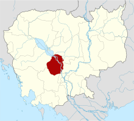

ភូមិសាស្ត្រ និងទីតាំង
កំពង់ឆ្នាំងជាខេត្តតូចមួយដែលមានចំងាយ ៩១ គីឡូម៉ែត្រ
ពីរាជធានីភ្នំពេញ។ វាស្ថិតនៅក្នុងវាលទំនាបនៃភាគកណ្តាលនៃប្រទេសកម្ពុជា
ហើយត្រូវបានបង្ហូរដោយ ទន្លេសាប ដែលជា ដៃទន្លេ នៃ ទន្លេមេគង្គ ។
រាជធានីភ្នំពេញមានការរីកចម្រើនរហូតដល់ព័ទ្ធជុំវិញព្រំប្រទល់ខេត្តកំពង់ឆ្នាំង។
និរុត្តិសាស្ត្រ
កំពង់ឆ្នាំង មានពាក្យ ខ្មែរ ពីរគឺ កំពង់ ( កំពង់កុង )
មានន័យថាកំពង់ផែឬកំពង់ផែ និង ឆ្នាំង ឆ្នែង មានន័យថាផែ។
ពាក្យទាំងពីរនេះរួមបញ្ចូលគ្នាមានន័យថា «ផែផែ» ឬ
«ផែផែរី» ។
ប្រវត្តិសាស្ត្រ
ឈ្មោះ
"កំពង់ឆ្នាំង" បកប្រែពីភាសាខ្មែរតាមព្យញ្ជនៈ "កំពង់ផែស្មូន" ។
សំណល់បុរាណវត្ថុពីតំបន់នោះបានបង្ហាញនូវវត្ថុបុរាណពីសម័យធវរៈ
ដែលជាអតីតរាជាណាចក្រក្នុងប្រទេសថៃបច្ចុប្បន្ន
ដែលមានអាយុកាលតាំងពីសតវត្សទី៦ដល់សតវត្សទី១១។ ជាច្រើនសតវត្សមុន
កំពង់ឆ្នាំងគឺជាទីក្រុងឆ្នេរសមុទ្រមួយនៅលើផ្លូវរវាងប្រទេសចិន
និងឥណ្ឌា។ ដោយសារការលិចទឹកពីទន្លេមេគង្គ
ឆ្នេរបានផ្លាស់ប្តូរ។ នៅពេលដែលទឹកទន្លេសាបបានផ្លាស់ប្តូរផ្លូវ
ទីក្រុងបានបាត់បង់ប្រភពទឹកសំខាន់ និងត្រូវបានបោះបង់ចោល
ដោយប្រជាជនបានផ្លាស់ទៅរស់នៅទីក្រុងមួយឈ្មោះថា កំពង់ត្រឡាច។
ទីក្រុងមួយបានបង្កើតជាបណ្តើរៗជុំវិញខ្លួននាំជីវិតថ្មីដល់កំពង់ឆ្នាំង។
សារមន្ទីរមួយបង្ហាញពីកំណត់ត្រាបុរាណវិទ្យានៃប្រវត្តិសាស្ត្រទីក្រុង។